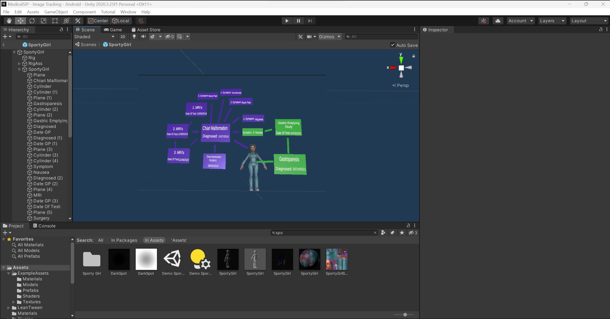

Home
AR Design
Articles
About
Visualize Life is an application using Unity AR Foundation. With this application, doctors can access a patients medical history using their phone and the Visualize Life app. All doctors have to do is scan a patients barcode on their ID bracelet using the app and all the data will pop up in an AR space for them to see. I was inspired to create this application based on my own experiences in healthcare. In my experience, it can be difficult for a doctor to read through everything with all the data I have. Doctors then have to rely on the patient to tell them all the relevant data. It's difficult as a patient to remember everything and key pieces of information can accidentally be missed.
